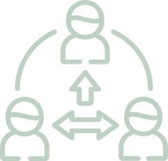

FEATURED WORKS

世界自行車日
統整活動資訊並推廣活動
將以往分散的資訊，統整在一個網頁上，利用RWD製作的方式，不論什麼裝置都能隨時看到完整的活動資訊，藉此推廣將網友從線上帶到線下，實際體驗自行車的美好，讓更多人一起響應世界自行車日。

OPEN POINT APP 功能介紹
整合APP相關網頁
隨著近年電子支付盛行，OPEN POINT APP推出越來越多功能，將OPEN錢包、icashPay、行動隨時取、會員載具，四大主要功能整合在此頁，讓消費者更清楚APP有哪些功能。
ABOUT ME
擁有平面設計背景，網頁設計經驗3年，會撰寫html、css，套用js插件。
曾製作統一集團旗下企業官網維護、活動網站建置、APP活動遊戲。
工作上善於觀察，喜歡團隊合作，解決問題。
專業技能

視覺設計

網頁切版

團隊溝通
擅長工具
Photoshop
illustrator

Adobe XD
Sublime